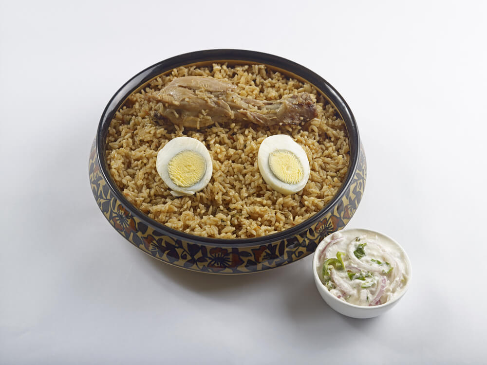

Chicken Biriyani

Description
Chicken Biriyani is a flavorful, aromatic rice dish made with marinated chicken, spices, seeraga samba rice, caramelized onions.
This recipe brings together the essence of Indian cooking, combining rich textures and bold spices to create a dish that hits every note — spicy, savory, and soul-warming.
Ingredients
- 1 kg chicken (cut into medium pieces)
- 2 cups seeraga samba rice
- 1 cup yogurt
- 2 onions (sliced)
- 2 tomatoes (chopped)
- 1 tbsp ginger-garlic paste
- Whole spices (cardamom, cloves, bay leaves, cinnamon)
- 1 tsp turmeric
- 1 tsp red chili powder
- 1 tsp garam masala
- Fresh coriander and mint leaves
- Salt
- Oil or ghee
Steps
- Wash and soak the seeraga samba rice for 30 minutes.
- Marinate chicken with yogurt, turmeric, chili powder, and salt. Set aside for 1 hour.
- Fry onions till golden brown. Set some aside for garnish.
- In a pot, heat oil/ghee and sauté whole spices, then add ginger-garlic paste and tomatoes.
- Add marinated chicken and cook till tender.
- Boil rice till 70% cooked and drain the water.
- Layer the rice over the chicken, top with fried onions, mint, coriander, and ghee.
- Cover and cook on low heat (dum) for 20 minutes.
- Fluff up gently and serve hot with raita or gravy
Home